The following is a simple user defined object (UDO) of type CAFE1 for the JD Edwards Address Book to display a map centered on a point corresponding to the current address book information on the screen.
CAFE1 is an acronym for Composite Application Framework for EnterpriseOne. This feature provides for the presentation of another JDE application or a third party website that may be contextually linked to the form to which the CAFE1 layout is attached. The linking of mapping software to the JDE address book is a very common UDO amongst JDE users due to its simplicity and usefulness. It is presented here as a companion piece to the address book validation orchestration as another tool to verify address book entries.
Prior to going over the process for creating the CAFE1 maps link, let's look at what the end user experience is with the mapping function already in place.
From Work With Addresses click Add (i.e., “+” button)
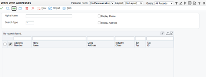Enter the Alpha Name, click on the mailing tab
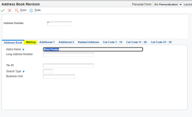Enter the address information. If you have followed our other topic on UDO development, you can optionally use the Validate Address button to assist in ensuring the correct data is present:
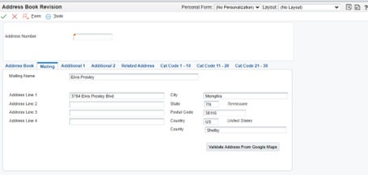In the upper right, choose Layout – Google Maps
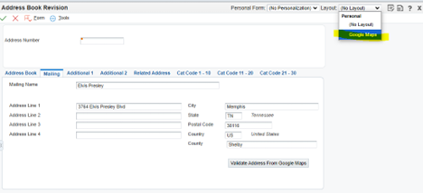You should now see a map on the right side of the screen centered on the coordinates corresponding to the street address in the current address book record:
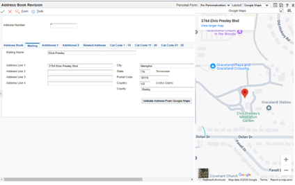The following shows how to set up a mapping website as a CAFE1 layout linked to the address book. The specific mapping website used is Google Maps, but this concept may be used with other mapping websites as well. Click in the upper right on the User name and select Edit Form Layout:
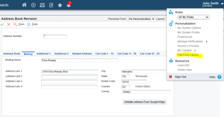Click in the upper left on the Create New Content icon, as shown below:
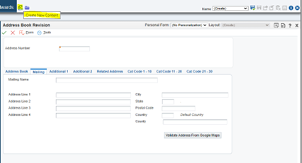Click and drag the URL option to the screen:
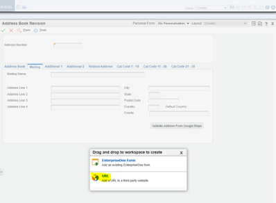When the URL frame is in the desired location, click it to place it:
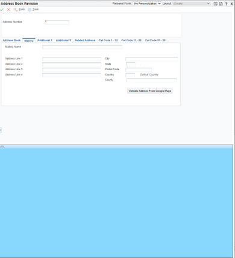We are using Google Maps for the mapping function, although there are other mapping services you can use. The format for looking up a specific address in Google Maps is as follows:
Enter the name and description. You can also click the Verify URL button to make sure the URL is correct.
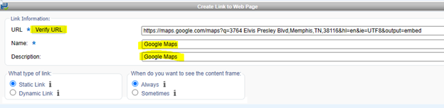You should get a message stating that the URL verification was successful if you have formed the URL correctly.
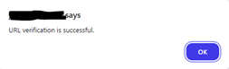Under “What type of link:” select Dynamic Link and under Operation select “is mapped to” for the q parameter:

You should now see each of the input fields has a plus sign enabled. Click on the appropriate fields required for the URL to function in the correct order. For the Google Maps URL click first on Address Line 1, then on City, State and Postal Code, in that order. As you click on each field you should see it added to the Path below:
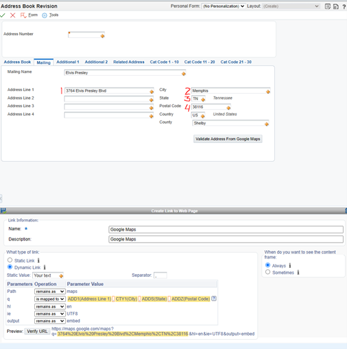Hit the Save button in the upper left:
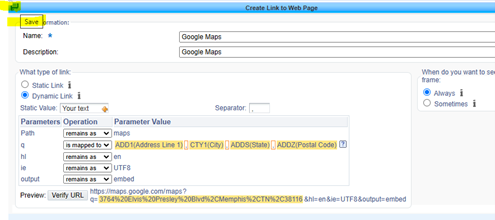The map should now render at the location corresponding to the data in the address book. Hit the Save button at the top of the page to save the layout.
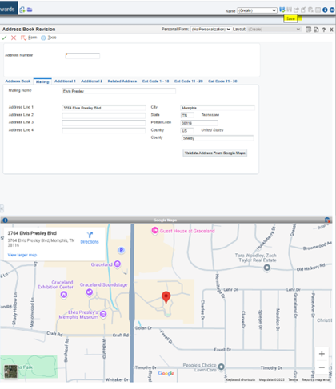Enter a name for the layout and hit OK:
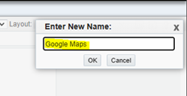You should see the following screen:
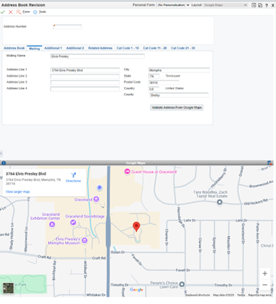To make changes, such as moving the frame to another position, select the Edit Form Layout as you did when first creating the CAFE1 UDO. Then click the header of the map UDO and drag it to a different position. For example, I want to move the wrap to the right of the entry form:
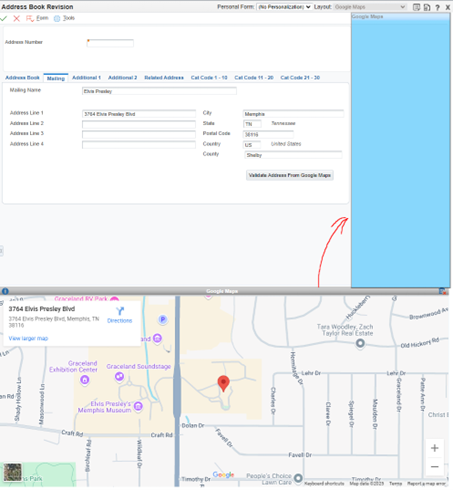You should then have the map on the right side of the screen, as follows:
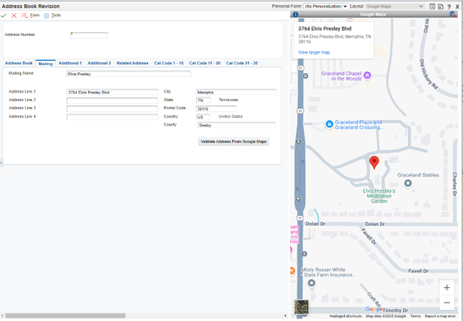Follow your organization’s procedures to roll out the CAFE1 layout to users as desired.
We have shown a relatively simple method to graphically display the address entered on the address book screen and done so using a JDE UDO that does not require modifying base JDE code. Based on experience, this simple add-on has proven to be of great value to help JDE users better understand their data and improve efficiency. If you have any questions/comments on this or similar functions, please use our Contact Us feature.
Back to Home